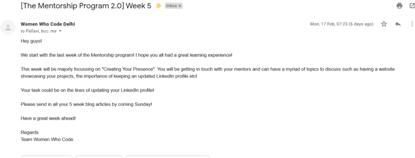

Of opportunities and beautiful journeys! - Mentorship Program 2.0 Week 5
The Women Who Code Delhi Mentorship Program 2.0 had one goal — to connect undergraduate women in STEM fields with women leaders in technology and thus further their professional development. I think it has been more than successful in that regard.

The last call with my mentor Mansi Breja and co-mentees Tanya Sikarwar and Anushka Shukla took place on 21st February, which was a bittersweet affair. We discussed any remaining doubts we had, and shared our progress reports over the last five weeks with each other. We didn’t have a particular task this week as we had covered the agenda for this week already in the previous weeks. We did discuss the importance of keeping your LinkedIn profile updated. Mansi di also shared her experience as a mentor during this program, and how it was the first time she got to mentor in its true sense, sharing all her wisdom and knowledge in its most raw form. She proudly commended the efforts we all put in over the course of the program. As she put it, our confused voices in the first call turned into confident voices by the last call 😛.

Personally, I really feel like this program has taught me how to seek and look for opportunities myself, and make the most of them. In my first blog, I mentioned how I wanted to make my own project and learn more about open-source. Today, as I am writing this, I’ve been accepted into the GirlScript Summer of Code as a participant where I will soon start making contributions to projects! In addition, I am learning the basics of Python for the next round of the TalentSprint WE Program. It has been a thrilling journey being part of this amazing community, and learning together with my co-mentees.
If you ever find yourself in a position to apply for the next Mentorship Program (3.0? :D), do not hesitate and apply! It has been a wonderful journey with unparalleled guidance and support from my mentor Mansi Breja. Thank you so much for this opportunity, Women Who Code Delhi!
Until next time, cheers!